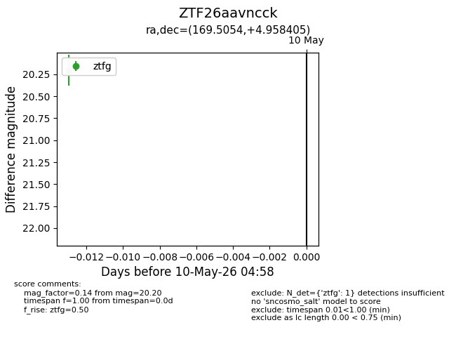
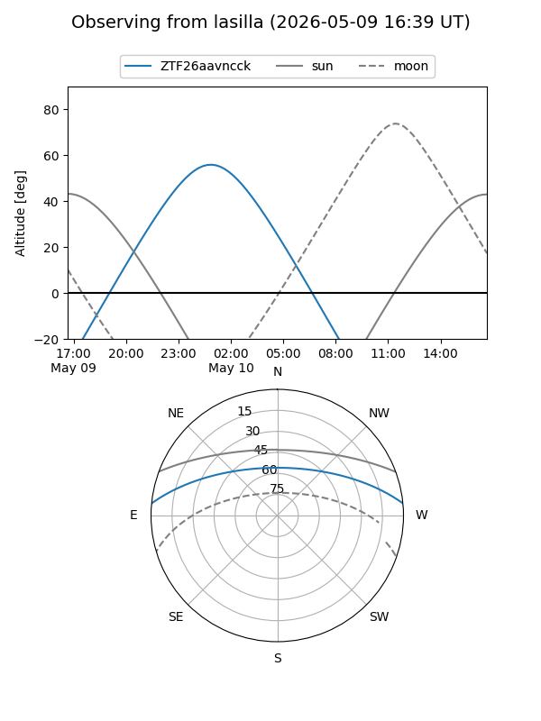
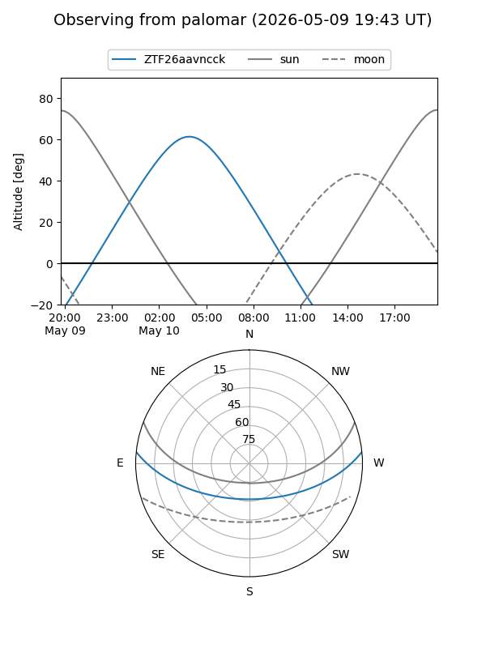
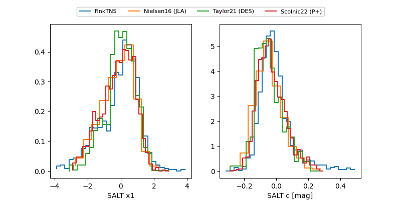

ZTF26aavncck
Target ZTF26aavncck at 2026-05-10 04:59
Aliases and brokers:
FINK: link
Lasair: link
ALeRCE: link
alt names
ZTF26aavncck (ztf,fink_ztf)
Coordinates:
equatorial (ra, dec) = 169.5054,+4.95840
equatorial (HMS+DMS) = 11:18:01.30,+04:57:30.26
galactic (l, b) = (253.6689,+58.58648)
Flags:
Photometry:
last ztfg=20.20
1 ztfg detections
Lightcurve

Visibility


Additional plots
